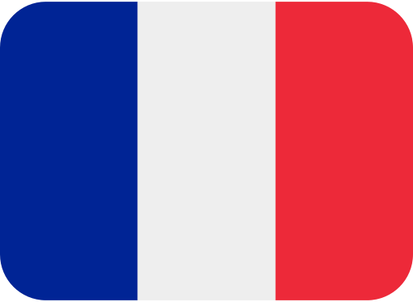

Speed Run de cada console
| Consoles | nomes/nacionalidade | horas jogadas | ano |
|---|---|---|---|
| Playstation 3 | Whitevans69 | 3h:40m:17s | 2013 |
| Playstation 4 | Jetalix  | 2h:33m:30s | 2020 |
| Playstation 5 | Yoranto | 2h:26m:39s | 2021 |
Speed Run de cada console
| Consoles | nomes/nacionalidade | horas jogadas | ano |
|---|---|---|---|
| Playstation 4 | Kevin700P | 4h:11m:49s | 2021 |
| Playstation 5 | Kevin700P | 3h:55m:20s | 2022 |
Aqui em cima está o speed run de the last of us a parte 1 e parte 2,e uma observação que a pessoa que que fez speed run da parte 2 é o mesma